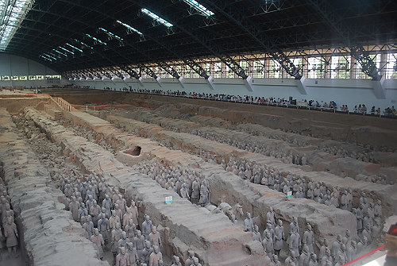

|

The people give you some idea of the size of this building. It measures about 210 meters (689 feet) long and 62 meters (203 feet) wide and the bottom of the pit varies from 4.5 meters (15 feet) to 6.5 meters (21 feet) below ground level. Ten earthen walls were built at intervals of 2.5 meters (8 feet), forming 9 circling corridors. |